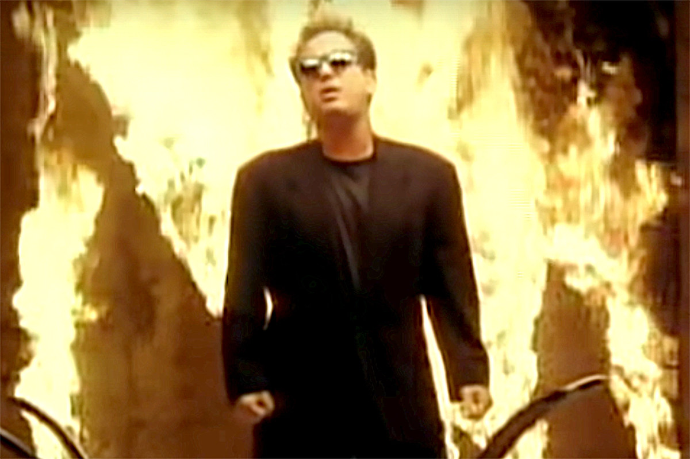
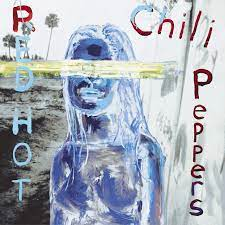
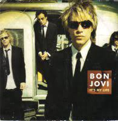

Turn on the news and chaos is what you will see, but who actually looks at the in news so instead you flip to facebook to see boomers
arguing about politcts. Fun right? If you take everything you see seriously you will believe society is on the brink of collapse. Maybe this is true
or maybe it's not who knows, and more importantly who cares? Apathy and worry may be an oxymoron but it is the American spirit. We have managed to
not care about anything that does not effect us and simultaenously be worried about everything. Instead of criticize us for being inconsistent
I say enjoy it! We need a little excitement in life and insanity keeps everyone entertained.

We didn't Start the Fire - Billy Joel
We Didn't Start the Fire is a song describing many of the crazy events that has effected the world and specifically America. The chorus "We didn't start the fire it was
always burning since the world's been turning" describes that no one person has caused the effective dumpster fire this world is, but we are all responsible
as these events are proof of societies character.
Welcome to The Internet - Bo Burnham
The Internet is basically synonomous with American culture as the internet has become accessible and it capiilizes off of American politics and desires
The chorus of this song written by American comedian, Bo Burnham repeats the line "Could I interest you in everything all of the time" this is in refrence
to consumer cultutre as being a first world country we have access to everything at any moment. Throughout the song the tone changes from comical to dark
with "Apathy is a tragedy and bordem is crime" being emphasized showing a spiral into insanity. The immense demand for our attention has given us choice overload
driving us into chaos.
White House Road - Tyler Childers
Tyler Childers is describing his experiences and misfortune growing up in the rural America; with his journey through fighting, and drugs he still craves the simple life.
In the line "Cast your troubles on the Lord of Lords" Tyler discusses his faith which he knows is not compatible with his lifestyle but enivitably falls to his old habits
saying "Get me drinking' that moonshine / Get me higher than the grocery bill."
It's The End Of The World As We Know It - R.E.M
American rock band R.E.M preforms a song about the insanity of the world. This is expressed in its use of random use of lyrics. If you read the lyrics looking for
plot you will be disappointed as most of the sentences are nonsensical except for the chorus where the speaker apathetically states "It's the end of the
world as we know it and I feel fine."

Can't Stop - Red Hot Chili Peppers
Can't Stop by Red Hot Chili Peppers is another nonsensical song with a conglomerate of lyrics that each sentence represent something that a member of the band has went through.
Through every line you see that it is a refrence to their fight with fame, addiction, and life. America is founded upon individualism, as a result, each person will have to learn
right from wrong themselves, and traditionally do not just listen to their elders. The idea of Can't Stop is described by SoundFacts in the quote below.
For this song, lead singer Anthony Kiedis wrote the lyrics around the music. The words are a somewhat random collection of thoughts, with some creative rhyming thrown in to fit the rhythm
of the song ("Can I get 2 maybe even 3 of these, come from space to teach you of the pleiades"). The song encourages the listener to live with passion and individuality ("This life is
more than just a read-through"), something the Chili Peppers have done throughout their career.
Californication - Red Hot Chili Peppers
Another piece by Red Hot Chili Peppers this time describing the American dream and values of humanism. Even the name of the song is a mixture of California and fornication showing that
morals will have little place here and instead we are to be free with each person pursuing his or her own interest.
Loosing My Religion - R.E.M
Loosing your religion is often an analogy for loosing your composure. This is the meaning behind the song the speaker has been overwhelmed and is now loosing his cool. The aftermath of
chaos is often exactly as this song describes once soomeone has experienced sensory overload they will be come unpredictable resulting in even more chaos.
Riders on the Storm - The Doors
Riders on the Storm has the setting of a chain of hitchiker killings. Unlike other songs on this list that seem apathetic to insanity this song is cold and forces you to see the gravity
of the situation. Sometimes it is hard to take a song seriously but this song shows the listener that this is an uncomprehenable situation with actual vicims that have lost their lives.

It's My Life - Bon Jovi
Classic rock song It's My Life by Bon Jovi focuses on individualism about living fearlessly and living in the moment. This is summed up in the line "I'm not gonna live forever / I just want to live while I'm alive."
Many of us live like death is not a possibility, and its not that we fear death we jus do not want to waste precious time on things we cannot control.
Smells Like Teen - Nirvana
Smells Like Teen spirit is a strange title, but the song is actually just stating how many people, mostly teenagers, will act erratic without any hesitation or fear of consiqunce.
The line "Here we are now, entertain us" sums up America's culture for insanity that we just want to be entertained. This can be good in the sense that it allows us to live in the moment,
or bad that it trains us to be consumers and act wrecklessly.
Hotel California - Eagles
Hotel California by the Eagles is about living in excess wealth; California is often used to represent loss of morals and excess wealth which is a reoccuring theme in many songs.
The name of the game in America is individualism because there is no need to worry about other for our system is so good one does not need to concern themselves with consiqunce.
American Idiot - Green Day
American Idiot by Green Day follows counter culture by bringing America's flaws to light. With the line "One nation controlled by the media" demonstrates how everthing is exaggerated and
polarized to create division. More over the line "Now everybody do the propaganda" shows that much of the stuff in the media or online does not represent reality, but it all part of an agenda.
My Stress - NF
The song My Stress by American rapper NF follows the rapper's experiences in fame where he seeks relief from stress caused by stress. The constant battle to stay relevant is affecting his mental
health causing unhealthy stress levels. This is something every college student can relate to because even though we are not doing strenious labor we are under constant stress to improve. Stress
affects almost everyone in America, and most people do not care much about wealth they would just like to be content.
Peace of Mind - Boston
Rock band, Boston, wrote a song discussing the search for peace. Going against our intuition and not focusing on wealth, but instead trying to be content. The song refences the chaos we see in
America with the line "People living in competition" while refuting this by saying "All I want is to have my peace of mind."
The Way I Am - Eminem
In a country where there is so much wealth and you can almost anything how is it once you have 'won' the game of capitalism. From this song and others in this playlist the answer seems to be "stressful"
In this song the rapper talks about how hard it is to be a crowd pleaser, and everyone expects him to act a certain way but sometimes he wishes he "would just die or get fired" this shows that
the weakness of a wealthy and free country is the constant stress to do whatever your want and please others.